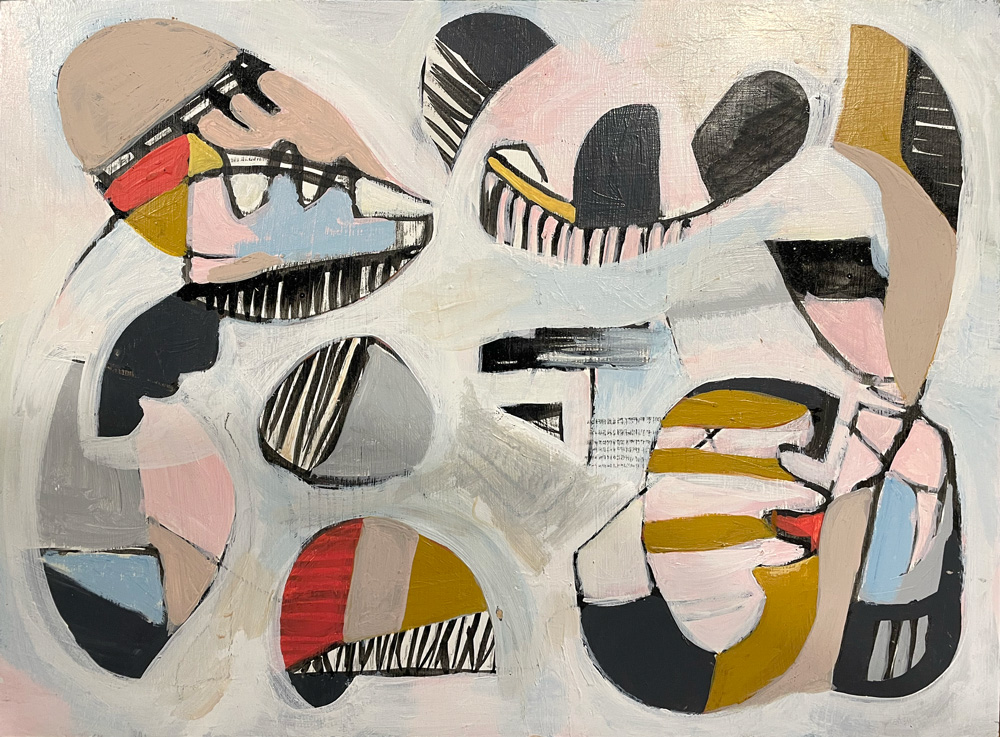
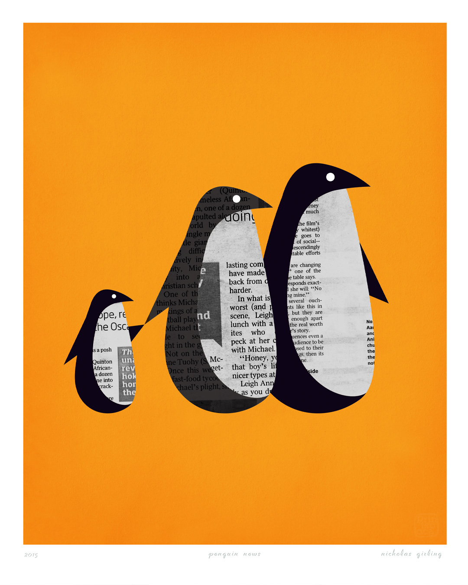
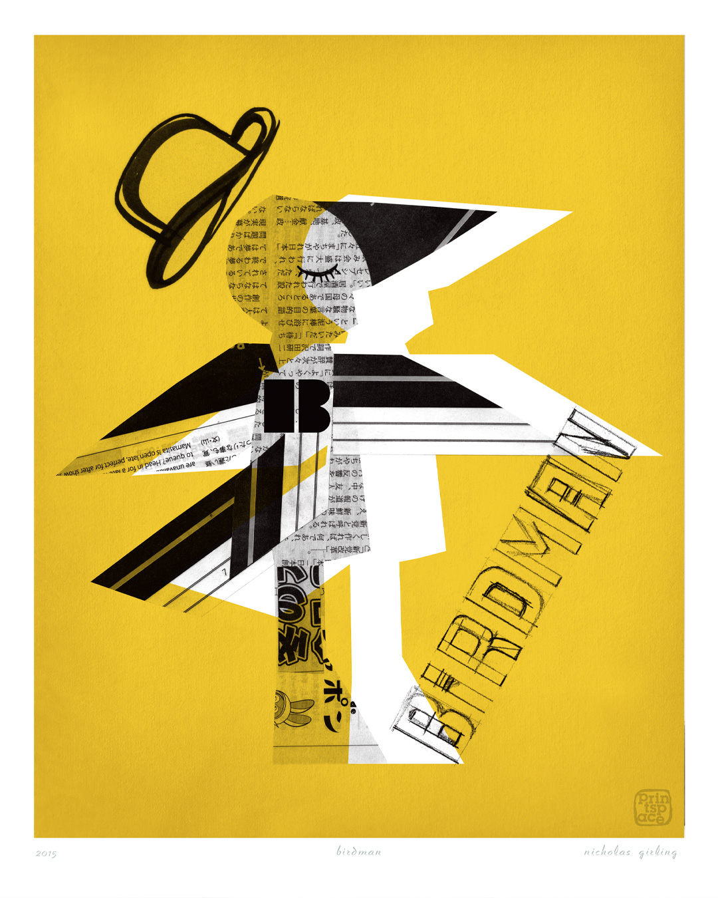
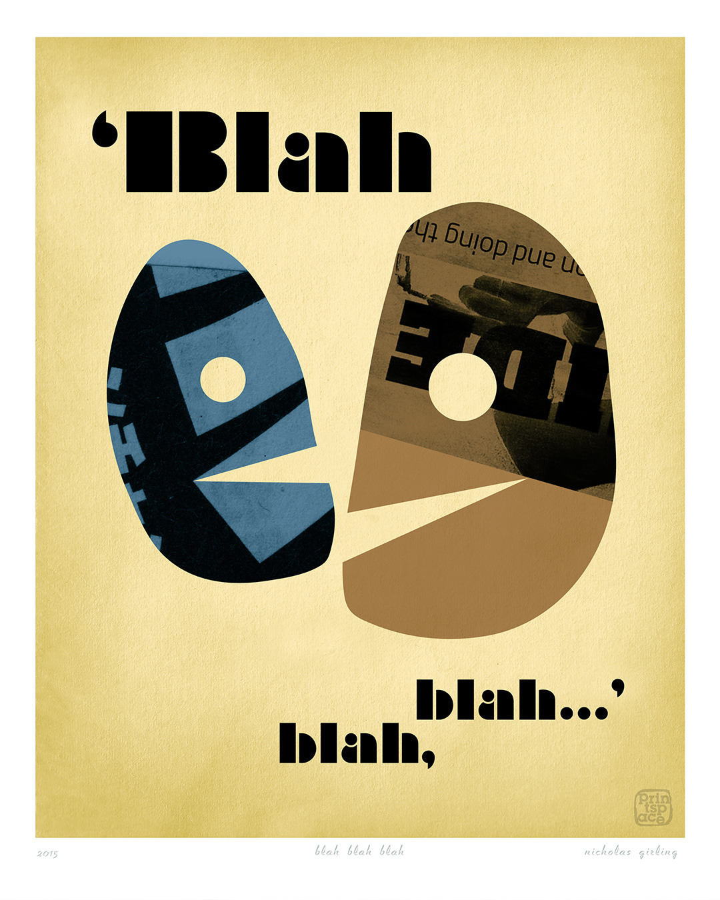

Nicholas Girling
I create acrylic paintings, limited edition art prints and graphic works that distil a subject to its essential form: whether it is a city, an animal, a scene or an abstract moment. My print works often combine collage, hand painting, ink, high-resolution preparation for prints and beautiful materials for my originals.
The work is made for people who feel that strong connection to certain places, subjects, colours and forms. The iconic nature of the work is intentional. Simplicity is not used to strip meaning away, but to bring that essence forward. The finished image becomes a visual reference for something the viewer may already carry: a memory, an attachment, a feeling, a place, or a private association that did not yet have a form.

Organics I

Penguin News

Birdman

Blah Blah Blah
I was introduced as an artist to my parents' friends long before I thought of it in those terms. I simply assumed that role, in my own life, in my creativity, and in how I have always moved through the world. I work from Melbourne. My practice moves between instinct and structure. Some works begin through expressive acrylic painting, where colour, movement and emotion lead the process. Others are more deliberately composed, shaped by clarity, restraint and the search for a strong visual idea.
Since 2013, I have been building an extensive body of city-based works, each one initially drawn by hand before being translated into a fine art print. These works draw on the emotional force of place: the cities people leave, return to, remember, or carry with them long after they have gone.
Through Printspace®, the art brand I created with Mara Girling, my work has reached collectors across Australia and around the world. My limited edition prints are signed and numbered, and produced on archival cotton-rag paper with pigment inks.
Across paintings, prints and graphic works, the intention is the same: to explore with curiosity and tap into what makes a style innate rather than prescribed. To explore the essence of things to try to understand what that place is where something takes on meaning to the person looking at or experiencing the artwork.
This is why I find abstract art interesting. Our minds are somewhat primed to look for something recognisable.
River Series Prints
Limited edition fine art prints from the River Series. Painterly surfaces high resolution transfer carried out by the artist, composed and printed on archival cotton-rag paper. Signed and numbered by the artist.
What's the storyAvailable City Prints
Over 25 collector series of limited edition city prints. Each one drawn by hand, translated into a graphic fine art print. Available through Printspace.
What's the story - OPENS PRINTSPACE.COM.AUAvailable Paintings
Hand painted acrylic paintings in various smaller sizes. Some are framed and others can be framed on request. Available to Australia. Commissions world wide.
What's the story